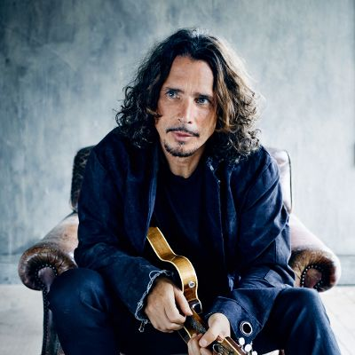
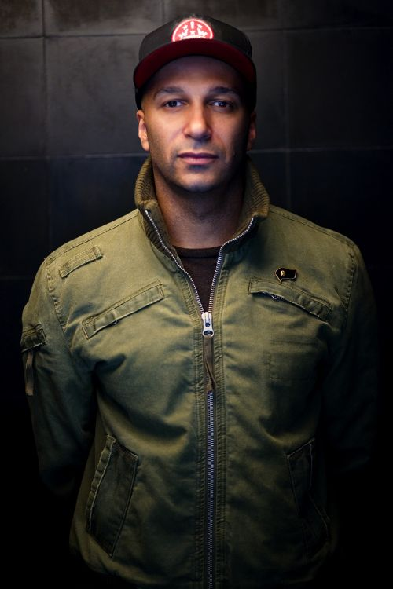
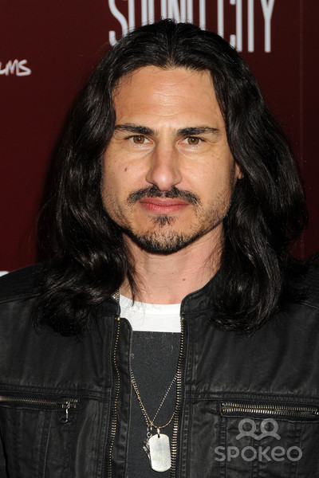
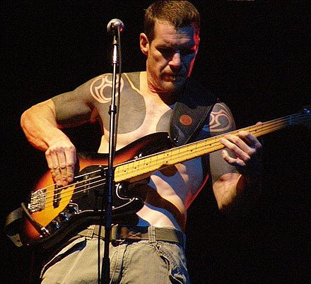

-

Chris Cornell
Chris Cornell (1964-2017) was a modern innovator who transcends genre. He was the chief architect of the 90s-grunge movement
and remains one of the best voices of all time. Achieving multi-platinum success with three legendary
bands – selling over 30 million records worldwide – he forged his own unique identity over three
decades as a Grammy® Award-winning, Golden Globe nominated singer, songwriter, guitarist, composer
and lyricist.
-

Tom Morello
Few rock guitarists in the 1990s were as groundbreaking as Rage Against the Machine's Tom Morello, who incorporated a myriad
of different styles into his own playing. Born in New York City on May 30, 1964, Morello was raised
by his mother (who, decades later, would help create the anti-censorship organization Parents for
Rock & Rap) in Libertyville, Illinois. As a teenager, Morello became infatuated with both rock
music and politics, as he was almost entirely self-taught on guitar (in fact, he learned the most
about the instrument while practicing up to eight hours a day during a stint at Harvard University,
where Morello majored in political science).
-

Brad Wilk
Bradley J. "Brad" Wilk (born September 5, 1968) is a musician, actor, and activist from the United States. He is best known
as the drummer of the rock bands Rage Against the Machine (1991–2000; 2007–11), Audioslave (2001–07),
and Prophets of Rage (2016–present). Wilk started his career as a drummer for Greta in 1990, and
helped co-found Rage with Tom Morello and Zack de la Rocha in August 1991. Following that band's
breakup in October 2000 Wilk, Morello, Rage Against the Machine bassist Tim Commerford, and Soundgarden
front man Chris Cornell formed the supergroup Audioslave, which broke up in 2007. As of 2016, he
is playing in the band Prophets of Rage, with Commerford, Morello, Chuck D, B-Real and DJ Lord.
-

Tim Commerford
Tim Commerford Tim Commerford rage.jpg Tim Commerford in 2007. Background information Birth name Timothy Robert Commerford
Also known as Timmy C Y.tim.K. Tim Bob tim.com S.W.I.M. Tim the Bassist Born February 26, 1968 (age
50) Irvine, California, U.S. Genres Alternative metal rap metal funk metal alternative rock hard
rock Occupation(s) Musician songwriter Instruments Bass guitar vocals Years active 1988–present Labels
Interscope Epic Associated acts Rage Against the Machine Audioslave Puscifer Future User WAKRAT Prophets
of Rage Website ratm.com Timothy Robert Commerford (born February 26, 1968) is an American musician,
best known as the bassist and backing vocalist for the American Funk metal band Rage Against the
Machine (1991–2000; 2007–2011), supergroups Audioslave (2001–2007) and Prophets of Rage (2016–present).
Since 2013 and 2015, he has also been the lead singer and bassist of the bands Future User and WAKRAT.
He was ranked eighth on Paste magazine's list of "20 Underrated Bass Guitarists" in 2014.[1]